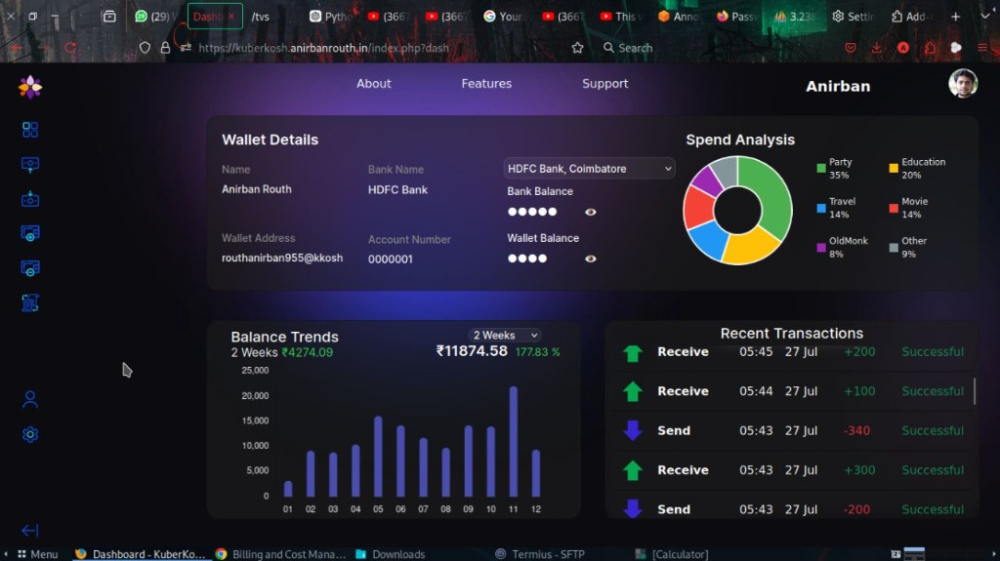
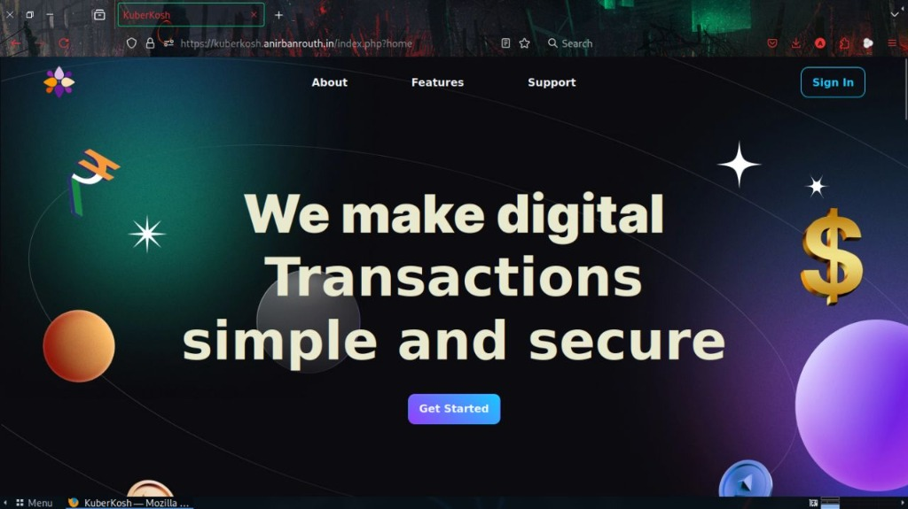
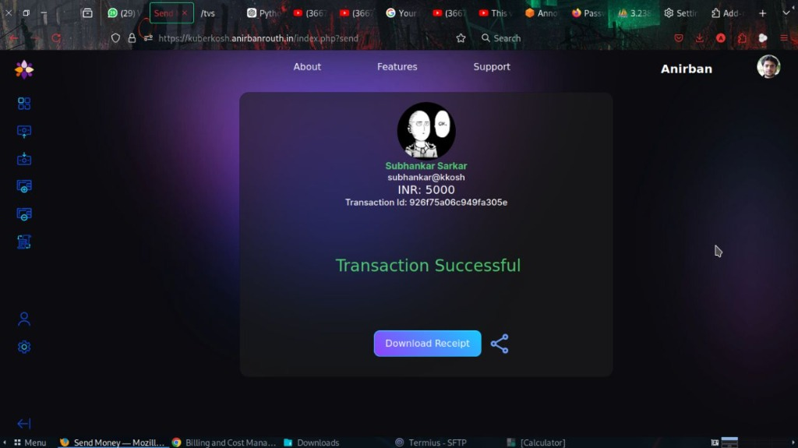

KuberKosh
Simple and Secure Digital Wallet
KuberKosh is a modern, web-based digital wallet application optimized for seamless, convenient peer-to-peer microtransactions and smart expense tracking. By enabling users to top up their wallet from linked bank accounts, KuberKosh eliminates the chaos of micro-payments cluttering up official bank statements. It pairs ultra-fast transaction steps with an institutional-grade security framework and powerful financial visualization tools.



// problem-solution.md
The Core Challenges
Vulnerable Logins & Interceptions: Simple web apps frequently transmit unhashed credentials or expose session variables to interception.
Cluttered Bank Statements: Buying snacks, street food, or paying minor utility bills fills bank logs with dozens of tiny entries.
Financial Blind Spots: Most everyday payment tools provide no immediate summary of lifestyle category spends.
The KuberKosh Fix
Cryptographic Vault Access: Implements a three-layered guard—Google OAuth2, localized TOTP Multi-Factor Authentication, and zero-plaintext client-side SHA-256 PIN hashing.
Isolated Wallet Architecture: Moves everyday micro-payments off bank servers into a secure relational database sandbox, grouping funding and withdrawal records cleanly.
Instant Analytics Engine: Dynamically renders real-time budget category percentages and multi-timeframe balance trends right on the primary viewport.
// features.md
Unified Analytics Dashboard
- Visibility Toggle: Obfuscate sensitive balances instantly with a visibility toggle icon in public areas.
- Spend Analysis Ring: JavaScript donut chart detailing category expenditures (Education, Party, Travel, Movie).
- Balance Trend Metric: Bar chart mapping wallet equity changes over custom periods (1 Week, 1 Month).
Secure Funds Routing
- Pre-Validated Linking: Pairs bank accounts to the wallet using explicit confirmation prompts.
- Secure Cash-Out: Withdrawals to primary bank accounts trigger modals requiring SHA-256 PIN verification.
Smart Peer-to-Peer Transfers
- Zero-Reload Verification: Asynchronous AJAX queries resolve and verify receiver wallets to prevent user entry errors.
- Encrypted PDF Receipts: Generates downloadable PDF transaction records with SHA3-256 vouchers.
Interactive Request Engines
- Dynamic QR Generation: Encodes specific billing amounts and descriptions into QRCodes, autofilling sender portals upon scanning.
// tech-stack.md
| Component | Technology Selected | Purpose & Justification |
|---|---|---|
| Backend Architecture | PHP (Server-side core) | Highly reliable request handling, native session protection, and smooth relational database connectivity. |
| Database System | MariaDB + phpMyAdmin | High-performance relational indexing structured in 3rd Normal Form (3NF) to protect data records against collision or latency. |
| Frontend Foundation | HTML5, SCSS, JavaScript | Implements fluid layouts compiled using Webpack and automated via Gulp workflows. |
| UI Framework | Bootstrap 5 | Built from the ground up for dynamic responsiveness across desktop and mobile devices. |
| Security Layer | Google OAuth, TOTP, SHA-256 | Two-factor protection leveraging RFC 6238 time-aligned authenticator keys alongside end-to-end HTTPS. |
| Infrastructure & Cloud | Docker, AWS EC2, Cloudflare | Containerised microservices hosted on stable cloud environments with built-in proxy edge protection against layer-7 DDoS traffic. |
| Dynamic Engines | TCPDF, QRCode.js | Direct runtime PDF compilation for transaction vouchers alongside client-rendered base-64 string QR patterns. |
// edge-cases.md
// Client- and server-side data verification rules for absolute reliability
Zero-Value
Zero-Value Submissions: Prevents structural mutations by actively testing transfers for values ≤ 0, outputting descriptive toast notifications.
Sanitization
Character Injection: Standardizes strict integer parsing validations on incoming values to trap alphanumeric manipulation cleanly.
Boundaries
Balance Boundaries: Queries current database logs before updating rows to prevent balance overruns or accounts slipping into debt.
Clock Shift
MFA Clock Shifts: Integrates synchronization safety nets within time-aligned code properties to account for device-server clock differences.
// future-scope.md
AI Financial Guidance
Integrating machine learning layers to scan transaction properties over time, providing users with proactive budgeting advice and optimization strategies.
Anomaly Defense Matrices
Incorporating AI-driven risk scoring profiles to recognize sudden geographic shifts or unusual transaction velocity pattern variations dynamically.
Distributed Ledgers
Investigating transition mechanisms toward cryptographic verification protocols to create decentralized, tamper-proof transaction logs.
Comprehensive Third-Party APIs
Deploying extensive, open-access developer API modules so external applications can natively interface with and accept KuberKosh transactions.
// faq.md
transaction_logs table with a status of "Failed" and the corresponding error details for auditing.
$stmt->prepare) and parameterized data binding ($stmt->bind_param), rendering SQL injection vectors impossible. Furthermore, strict server-side and client-side parameter sanitization filters are implemented to clean incoming integer inputs and block potential payload insertions.
QRCode.js on the client side. When scanned by the payer, the system decodes the string and dynamically pre-fills the standard "Send Money" form securely, keeping the handshake lightweight and fast.
// run-local.md — Launch container environment and tooling
Local Deployment
Standard PHP/Apache2 container network environment
- Requires Node.js & npm installed locally
- Gulp SCSS/sass compilation pipeline toolchain
- Docker CLI & Docker Compose container engines
- GPG & Pass Password Store for credentials vault
// Quick launch commands
-
1.
Clone & enter repository:
git clone https://github.com/anirban1011/KuberKosh.git cd KuberKosh -
2.
Install dependencies & SCSS:
npm install npm install --save-dev gulp-sass sass npm start -
3.
Initialize credentials vault:
gpg --generate-key pass init <gpg-key-id> -
4.
Launch containers:
docker-compose up -d --build -
5.
Access dashboard:
Navigate browser to
http://localhost:8080
// author.md